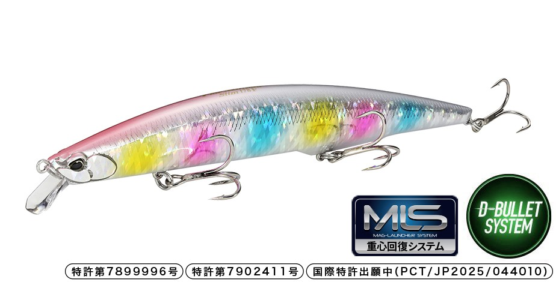
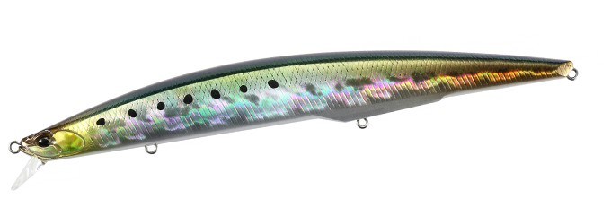
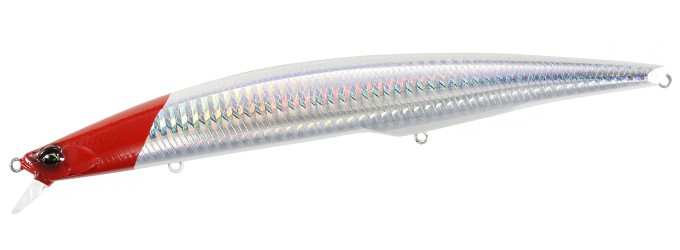
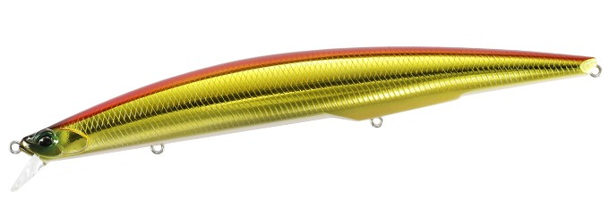
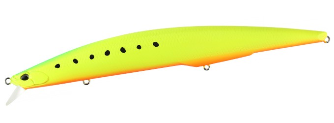
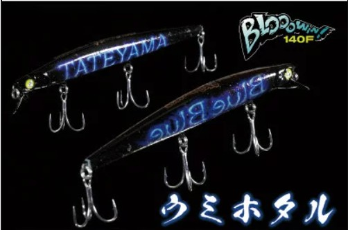

タイドミノースリム178F
（Tide Minnow Slim 178F）
タイドミノースリム178F（Tide Minnow Slim 178F）はDUO（デュオ）のフローティングミノーです。
サーフや河口のシーバスゲームで定番となっているタイドミノースリムシリーズに追加された178mmモデル。DUO独自開発の磁力で重心を瞬時に戻す「MLS（マグランチャーシステム）」を初搭載し、ロングミノーの飛距離と着水直後の泳ぎ出しを両立しているのが最大の魅力です。

画像出典:DUO公式HP
スペック
- メーカー
- DUO（デュオ）
- タイプ
- フローティングミノー（重心移動 D-バレットシステム×MLS）
- 全長
- 178mm
- 自重
- 32g
- レンジ
- 0.5〜0.8m
- フック
- #4
- リング
- #3.5
- ターゲット
- シーバス・青物
- 価格
- 3,190円（税込）
▼今すぐチェック

タイドミノースリム178Fの特徴
磁力の重心復帰で、ロングミノーの飛距離と着水直後からの泳ぎを両立した178mmモデル
-
「MLS（マグランチャーシステム）」を初搭載
キャスト時は高比重ウエイトが後方へ移動して飛距離を確保。着水直後は背中側とシャフト後部に配置した高磁力磁石が引き合い、ウエイトを瞬時に前方へ戻す。泳ぎ出しが速いので、着水直後のバイトチャンスを逃しにくい。
-
スローでも水を掴み、ファストでも破綻しないウォブンロール
スローリトリーブではしっかり水を掴み、ファストリトリーブでも破綻しない安定したウォブンロールを発揮。ただ巻きからジャークまで幅広いメソッドに対応する。
-
178mmのスリムシルエットで大型ベイトにマッチ
スリムなロングボディで大きめのベイトを意識した魚にアピール。レンジは0.5〜0.8mと浅めなので、シャローや表層付近を広く引いてくる釣りに向く。
タイドミノースリム178Fの使い方
基本はただ巻き。着水と同時に泳ぎ出すので、着水直後からリトリーブを始めてOK。スローリトリーブでじっくり水を掴ませる泳ぎを見せ、反応がなければスピードを上げて探っていく。
レンジ0.5〜0.8mのフローティングなので、シャローのブレイクや表層付近に魚が浮いている状況で通しやすい。ただ巻きで反応がない時は、軽いジャークやトゥイッチを混ぜて動きに変化をつけるのも有効です。
タイドミノースリム178Fの得意な状況
サーフや河口・干潟など、広いシャローエリアを遠投で探りたい状況が最大の出番。
イワシやコノシロ、ボラなど長めのベイトが入っている時に、大きめのシルエットで存在をアピールしたい場面で選びたい1本です。
ワンポイント
MLSの恩恵で着水直後から泳ぎ出すため、着水後に糸ふけを取りすぎずにすぐ巻き始めるのがコツです。
ベイトが小さい時やもう少しコンパクトに見せたい時は、同時に展開される148Fに持ち替えると使い分けがしやすくなります。
タイドミノースリムシリーズの使い分け
| モデル | 全長／自重 | 得意な場面 |
|---|---|---|
| 120 | 120mm／13g | シリーズの原点・フローティング・レンジ0.6〜1.0m |
| 140 | 140mm／18g | サーフゲームで人気のセカンドモデル・フローティング |
| 140 FLYER | 140mm／21g | 飛距離特化のシンキング・レンジ0.8〜1.1m |
| 148F | 148mm／22g | MLS搭載・フローティング・レンジ0.5〜0.8m |
| 175 | 175mm／27g | ロングミノー・フローティング・レンジ0.8〜1.3m |
| 175 FLYER | 175mm／29g | ロングボディの飛距離特化シンキング |
| 178F | 178mm／32g | MLS搭載・大型ベイト×遠投・浅めのレンジ（本記事のモデル） |
| 200 | 200mm／27g | 超ロングシルエット・フローティング・レンジ0.3〜0.8m |
タイドミノースリムは120mmから200mmまで幅広いサイズと、フローティング／FLYER（シンキング）の展開があるシリーズ（ほかに200 FLYERもラインナップ）。MLSを搭載した148F・178Fは、着水直後から泳ぎ出す新世代モデルという位置づけだ。
オススメカラー
タイドミノースリム178Fは全10色展開。シーバス・青物狙いでオススメのカラーを厳選して紹介します。

CAA1018 テイスティイワシイワシパターンにマッチするナチュラル系。澄み潮やデイゲームの基準カラーに。

AHA0001 レッドヘッドホロミノーの定番レッドヘッドにホロのフラッシングをプラス。状況を問わず1本持っておきたい。

ASA0026 アカキン濁りやローライトに強いアカキン。マズメ時や濁った河口で存在感を出したい時に。

ACC0547 マットチャートイワシマットチャートで視認性とシルエットの強さを両立。朝夕マズメのサーフで使いやすい。
画像出典:DUO公式HP
タイドミノースリム178Fに似ているルアー
-
 サスケ140真裂波
アイマ
詳細はこちら＞
サスケ140真裂波
アイマ
詳細はこちら＞
全長140mm・自重23gの重心移動フローティングミノー。重心移動システムによる飛距離と、着水後のすばやい泳ぎ出しを重視した設計がタイドミノースリム178Fと共通する。
-

ブローウィン140F ブルーブルー 詳細はこちら＞140mmクラスのフローティングミノー。サーフや河口でシャローを広く探るという狙いどころが重なり、少しコンパクトに見せたい時の選択肢になる。
-
 カゲロウ124F
メガバス
詳細はこちら＞
カゲロウ124F
メガバス
詳細はこちら＞
124mmのシャローランナー。浅いレンジをスローに引いてシーバスに口を使わせる使い方で、タイドミノースリム178Fと選択肢が重なる1本。